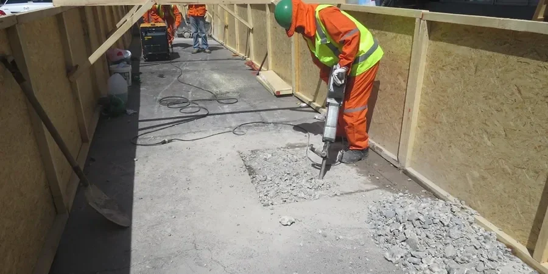

Our firm provides comprehensive geotechnical services across Birkenhead, supporting residential, commercial, and infrastructure projects from initial site characterization through final foundation design. We combine consolidated regional experience with calibrated field and laboratory equipment to deliver code-compliant subsurface investigations, soil mechanics study, and foundation recommendations tailored to local ground conditions. Whether you require shallow or deep foundation solutions, earthworks supervision, or groundwater control strategies, our team works closely with local contractors and authorities to ensure project success. From small extensions to large-scale developments, we bring technical rigor and practical insight to every assignment in the Wirral peninsula.

Technical reference image — Birkenhead
Process overview
Birkenhead is underlain by a sequence of Quaternary deposits overlying Triassic bedrock. The superficial geology is dominated by glacial till (boulder clay) of the Irish Sea till formation, which typically comprises stiff to very stiff reddish-brown silty clay with occasional sand and gravel lenses. This till is often overlain by variable thicknesses of peat, alluvial silt, and made ground—especially near the historic docklands and along the River Mersey corridor. Groundwater is generally encountered within sand and gravel horizons within the till or within the underlying Sherwood Sandstone aquifer, which can be confined or semi-confined depending on local clay cover. Seasonal fluctuations and tidal influences from the Mersey can affect near-river sites. The region is considered low seismicity, but differential settlement risks arise from variable fill thickness and soft compressible layers in reclaimed areas. Our investigations routinely target these features to support solid foundation design and slope stability assessments.
Local context
Our team brings decades of collective experience on the Wirral, having completed numerous projects in Birkenhead involving brownfield redevelopment, coastal defences, and residential foundations. We maintain a calibrated geotechnical laboratory in the North West, enabling fast turnaround on index and strength tests. Our engineers are chartered with the ICE or IStructE and regularly liaise with Merseyside Environmental Advisory Service and Wirral Council planning officers. By combining local geological knowledge with rigorous application of Eurocode 7, we provide reliable, cost-effective solutions that meet all regulatory requirements.
All geotechnical work in Birkenhead follows British and European standards. Key codes include BS 5930 (site investigation), BS EN 1997-1 and -2 (Eurocode 7 for geotechnical design), and BS 8004 (foundations). Laboratory testing adheres to BS 1377 methods. For pavement and earthworks, we reference the Design Manual for Roads and Bridges (DMRB) and the Manual of Contract Documents for Highway Works (MCHW). Our reports are fully compliant with these standards and are accepted by local building control and the local authority.
Common questions
What typical ground conditions are encountered in Birkenhead?
Most of Birkenhead is underlain by glacial till (boulder clay) of the Irish Sea formation, a stiff reddish-brown silty clay with occasional sand and gravel lenses. Near the docks and river, you may find alluvial silts, peat layers, and variable made ground. The underlying Sherwood Sandstone aquifer can cause groundwater issues in excavations. We always recommend a phased site investigation to map these conditions accurately.
Do I need a geotechnical investigation for a small extension in Birkenhead?
Yes, even for small extensions, a limited investigation is advisable to assess bearing capacity, identify any soft spots or fill, and check for groundwater. Many local properties are on clay soils that can shrink or swell, leading to differential movement. A simple trial pit or borehole with laboratory tests provides the information needed for a safe, economical foundation design.
What UK standards govern geotechnical design in Birkenhead?
Geotechnical design in the UK is governed by Eurocode 7 (BS EN 1997-1 and -2) along with its National Annex. Site investigation follows BS 5930, and laboratory testing follows BS 1377. For highways and infrastructure, the DMRB and MCHW apply. All our reports are prepared to these standards and are accepted by Wirral Council building control.
How do you handle contaminated ground or made ground on brownfield sites?
Brownfield sites in Birkenhead often contain variable made ground including demolition rubble, ash, and industrial waste. Our investigations include targeted boreholes and trial pits to characterise fill thickness, composition, and contamination. We coordinate with environmental consultants to provide integrated geotechnical and geo-environmental recommendations, ensuring safe foundation solutions and compliance with planning conditions.